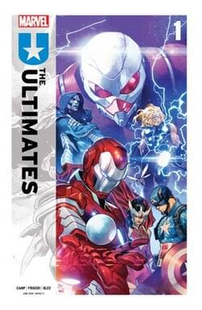
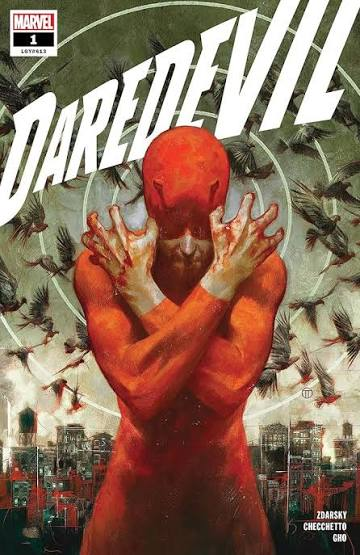
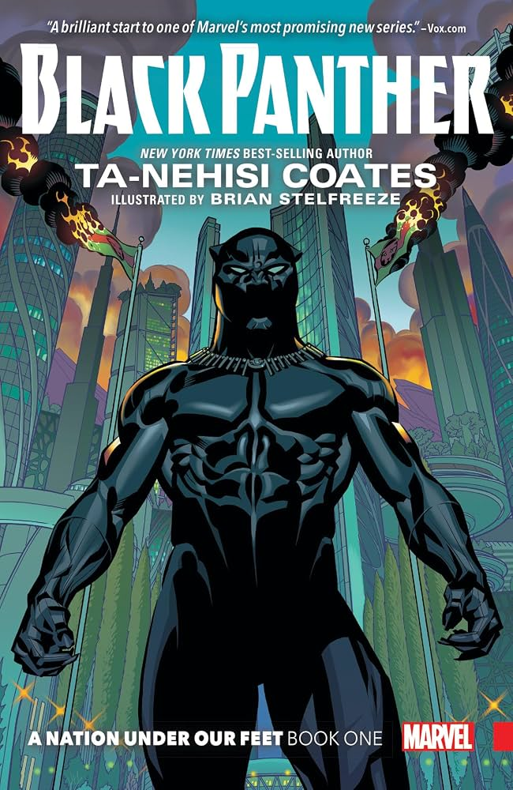

Featured Stories
Explore legendary comic arcs, iconic heroes, and multiverse adventures.

Ultimates
Spinning out of Ultimate Universe #1, Deniz Camp and Juan Frigeri introduce a new team of Ultimates in the next chapter of Marvel's Ultimate line. Six months after Tony Stark (Iron Lad) helped Peter Parker become Spider-Man, Stark and his allies—Captain America, Doom, Thor, and Sif—have been recruiting lost heroes to build a resistance network. Together, this new team must unite to dismantle the shadow-ruling Maker's Council and restore freedom to the world.

Dare Devil
The next chapter in the ever-surprising saga of Daredevil! After a brush with death, Matt Murdock must piece together his shattered life - and that includes returning to action as Daredevil! But years of trauma have taken their toll, and becoming the guardian of Hell's Kitchen he once was won't be easy. Mistakes will be made along the way - and this time, one might actually prove to be the end of him.

Ultimate X-men
Visionary creator PEACH MOMOKO (DEMON DAYS, STAR WARS) creates a new generation of X-Men for an all-new universe! Hisako Ichiki is a teenage girl who just wants to live a normal life - go to school, hang out with her friends, ignore the political strife broiling over after the events of ULTIMATE INVASION - but life has other plans for her. In Japan, urban legends have sprung to life and brought some unusual new powers with them…Meet Armor, Maystorm and a group of new Ultimate X-Men the likes of which you've never seen before!

Amazing Spider-Man
Peter Parker is on the outs with the Avengers, the Fantastic Four and even Aunt May! But what did Spider-Man do that has alienated him from everyone? And what’s going on with Peter and Mary Jane? Doctor Octopus is out to get his archnemesis, the Master Planner is unleashing fresh schemes and the gangster called Tombstone is masking some shocking moves that will culminate in a truly brutal showdown! Somebody from Spidey’s past captures the Sinister Six and uses them to create the truly terrifying Sinister Adaptoid! Norman Osborn returns to shake up the status quo! Tragedy strikes when a young hero falls! And Marvel’s two most infamous clones — Ben Reilly and Madelyne Pryor — unite to spin a Dark Web that ensnares Spidey and the X-Men!

A Nation Under Our Feet">Black Panther: A Nation Under Our Feet
A nation in turmoil! As Wakanda faces political unrest and violent rebellion, T'Challa struggles to reconcile his duty as a king with his oath as a superhero. Discover the acclaimed storyline that redefines the legacy of the Black Panther.

Miles Morales: Spider-Man
Saladin Ahmed shakes up the world of Miles Morales! The young Spider-Man has his hands full with adversaries including the Rhino, Tombstone and…Vice Principal Drutcher?! But is the high-flying Starling friend or foe? When an unknown assailant captures Miles, it sets in motion a series of events that will change his life - while an oddly familiar villain named Ultimatum threatens to destroy it! Meanwhile, the Morales family has a new arrival, the nation threatens to outlaw teen vigilantes, and Miles is about to face his own clone saga! But there are even bigger problems lurking - both in a dark future and out in the Multiverse!